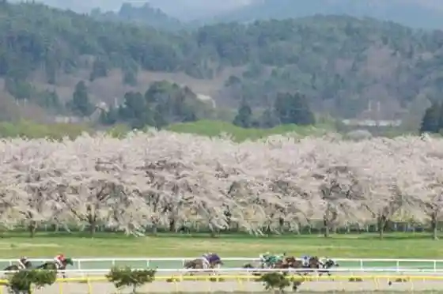
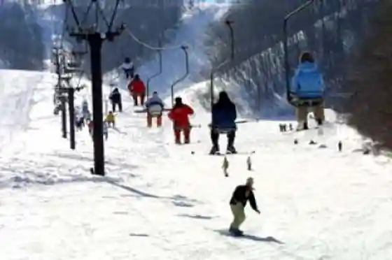
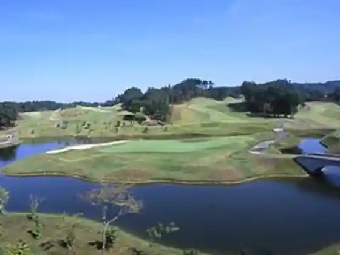

Mizusawakeibajo
Oshu, Iwate · 0197-23-2999 · Official / source link

Kunimi Taira Ski Area
Oshu, Iwate · 0197-52-6611 · Official / source link

Maesawa Ushi no (Nigiri) Jo Hachi Sushi
Oshu, Iwate · 0197-56-4141 · Official / source link
Michi no Ku Koto Kantorii Club
Oshu, Iwate · 0197-52-4011 · Official / source link

Iwate Esashi Ushi
Oshu, Iwate · 0197-34-1759 · Official / source link
Esashi Kantorii Kurabu
Oshu, Iwate · 0197-35-7100 · Official / source link
Hatomugi Cha
Oshu, Iwate · Official / source link
Kaferesutoran Beshikku
Oshu, Iwate · 0197-56-5932 · Official / source link
Iwate Oshu Ushi
Oshu, Iwate · 0197-24-2111 · Official / source link
Maesawa Ushi no (Nigiri) Kitcho Sushi
Oshu, Iwate · 0197-56-5906 · Official / source link
Noka Resutoran Mada Kisu Ta
Oshu, Iwate · 0197-46-4241 · Official / source link
Oshu Sembei Senmonten Senya
Oshu, Iwate · 0197-47-1008 · Official / source link
Meika Sandai Sugi
Oshu, Iwate · 0197-56-5002 · Official / source link
Tsubu Numa Campground
Oshu, Iwate · 0197-24-2111 · Official / source link
Iwate Meijo
Oshu, Iwate · 0197-56-3131 · Official / source link
Mizusawa Kanko Bussan Center Z Plaza Aterui
Oshu, Iwate · 0197-22-7800 · Official / source link
Esashi Ringo
Oshu, Iwate · 0197-36-3117 · Official / source link
Maesawa Ushi
Oshu, Iwate · 0197-56-5035 · Official / source link
Tororodon
Oshu, Iwate · 0197-47-0434 · Official / source link
Shokuji Tokoro
Oshu, Iwate · 0197-49-2964 · Official / source link
Esashi Kinsatsu Kome
Oshu, Iwate · 0197-35-0211 · Official / source link
Ushi Takumi Ogata Eki Higashi Mise
Oshu, Iwate · 0197-56-7729 · Official / source link
Maesawa Gyuniku Ryori Aji Kokoro
Oshu, Iwate · 0197-47-4129 · Official / source link
Ushi Chan Pai Ei Susumu Do
Oshu, Iwate · 0197-56-4232 · Official / source link
Nambu Tekki
Oshu, Iwate · 019-689-2336 · Official / source link
Isawa Sanchoku Center Ajisai
Oshu, Iwate · 0197-47-2345 · Official / source link
Iwayado Yokan Kiku Sendo
Oshu, Iwate · 0197-35-2627 · Official / source link
O Yasumi Tokoro Esashi Fujiwara no Sato
Oshu, Iwate · 0197-35-7790 · Official / source link
Wafu Resutoran Ushi Village
Oshu, Iwate · 0197-56-6115 · Official / source link
Iwayado Yokan Kai Susumu Do
Oshu, Iwate · 0197-35-2636 · Official / source link
Yakiishi Renpo Beach Line
Oshu, Iwate · 0197-46-0360 · Official / source link
Yakiishi Gaku Onsen
Oshu, Iwate · 0197-46-0360 · Official / source link
Resutoran Azaria
Oshu, Iwate · 0197-35-6101 · Official / source link
Kawanishi Dainen Hotoke Kembu
Oshu, Iwate · 0197-34-1315 · Official / source link
Boku no Kisawa Nembutsu Kembu
Oshu, Iwate · 0197-34-1315 · Official / source link
Taneyama Highlands Seiza Forest
Oshu, Iwate · 0197-38-2366 · Official / source link
Saito Jitsu
Oshu, Iwate · 0197-23-2768 · Official / source link
Takano Choei
Oshu, Iwate · 0197-23-6034 · Official / source link
Toko Iori
Oshu, Iwate · 0197-26-3679 · Official / source link
Gekko Iori
Oshu, Iwate · 0197-34-3921 · Official / source link
Roadside Station (Mizusawa)
Oshu, Iwate · 0197-26-3739 · Official / source link
Ushi no Museum
Oshu, Iwate · 0197-56-7666 · Official / source link
Oshu Maizo Bunkazai Chosa Center
Oshu, Iwate · 0197-22-4400 · Official / source link
Hakucho Kan Iseki
Oshu, Iwate · 0197-56-2111 · Official / source link
Oshu Uchu Yugaku Kan
Oshu, Iwate · 0197-24-2020 · Official / source link
Goto Shinpei
Oshu, Iwate · 0197-25-7870 · Official / source link
Yakushido
Oshu, Iwate · 0197-46-2111 · Official / source link
Oshu Dento Sangyo Hall Nambu Tekki Kan
Oshu, Iwate · 0197-23-3333 · Official / source link
Sakura no Kairo (Kokudo 397 Gosen no Sakura Namiki)
Oshu, Iwate · 0197-46-0360 · Official / source link
Isawa Marugoto Information Center
Oshu, Iwate · 0197-46-0360 · Official / source link
Tateyama Shiseki Park (Iwayado Shiromoto Maru Ato)
Oshu, Iwate · 0197-35-2111 · Official / source link
Oshu Kinukawa Rekishi Fureai Kan
Oshu, Iwate · 0197-52-3750 · Official / source link
Kinukawa Furusato Shizen Juku
Oshu, Iwate · 0197-52-3111 · Official / source link
Taiheiyo Senshi Kan
Oshu, Iwate · 0197-52-3000 · Official / source link
Mizu no Rekishi Park (Toku Mizu Sono)
Oshu, Iwate · 0197-24-0171 · Official / source link
Nishikan Senju Kannon
Oshu, Iwate · 0197-56-3270 · Official / source link
Mokuzo Kabuto Batsu Bishamonten Ritsuzo
Oshu, Iwate · 0197-35-2111 · Official / source link
Rekishi Koen Esashi Fujiwara no Sato
Oshu, Iwate · 0197-35-7791 · Official / source link
Kikuta Kazuo Memorial Museum O Festival Densho Kan (Esashi City Yukei Bunkazai)
Oshu, Iwate · 0197-35-9800 · Official / source link
Kuni Shitei Historic Site Kaku Tsuka Burial Mound
Oshu, Iwate · 0197-46-2133 · Official / source link
Esashi Kyodo Bunka Kan
Oshu, Iwate · 0197-31-1600 · Official / source link
Kuni Shitei Historic Site Isawa Castle Ruins
Oshu, Iwate · 0197-22-4400 · Official / source link
Goto Shinpei Kyutaku
Oshu, Iwate · 0197-22-5642 · Official / source link
Goto Haku Kinen Kominkan
Oshu, Iwate · 0197-22-3556 · Official / source link
Menkoi Art Museum
Oshu, Iwate · 0197-22-5935 · Official / source link
Kitakan Sakura
Oshu, Iwate · 0197-52-3111 · Official / source link
Minami Iwate Koryu Plaza
Oshu, Iwate · 0197-23-7176 · Official / source link
Oshu Buke Jutaku Museum
Oshu, Iwate · 0197-22-5642 · Official / source link
Buke House
Oshu, Iwate · 0197-22-7800 · Official / source link
Tan Eji Ku Koiki Koryu Center
Oshu, Iwate · 0197-24-6644 · Official / source link
Hidaka Shrine
Oshu, Iwate · 0197-23-4021 · Official / source link
Goto Shinpei Memorial Museum
Oshu, Iwate · 0197-25-7870 · Official / source link
National Tenmondai Mizusawa VLBI Kansokujo
Oshu, Iwate · 0197-22-7111 · Official / source link
Saito Jitsu Memorial Museum
Oshu, Iwate · 0197-23-2768 · Official / source link
Goto Juan En
Oshu, Iwate · 0197-25-7707 · Official / source link
Miwake Mori Park
Oshu, Iwate · Official / source link
Kyozuka Yama no Tsutsuji
Oshu, Iwate · 0197-56-2111 · Official / source link
Komagata Shrine
Oshu, Iwate · 0197-23-2851 · Official / source link
Ki Village Sakae Memorial Museum
Oshu, Iwate · 0197-24-2020 · Official / source link
Kuni Shitei Historic Site Takano Choei Kyutaku
Oshu, Iwate · 0197-23-6034 · Official / source link
Yakiishi Gaku
Oshu, Iwate · 0197-46-2111 · Official / source link
Kamado Jinja Honden Ichiu
Oshu, Iwate · 0197-56-2111 · Official / source link
Sankyo Shuraku
Oshu, Iwate · 0197-46-2111 · Official / source link
Egune Kizuma
Oshu, Iwate · 0197-46-2111 · Official / source link
Myogo Sawa Ko Kawara Shutsudo Iseki
Oshu, Iwate · 0197-56-2111 · Official / source link
Koromo Falls
Oshu, Iwate · 0197-52-3111 · Official / source link
Kunimi Yama
Oshu, Iwate · 0197-52-3111 · Official / source link
Isshu Saka
Oshu, Iwate · 0197-52-3111 · Official / source link
Kinukawa Saku
Oshu, Iwate · 0197-52-3111 · Official / source link
O Monomi Park
Oshu, Iwate · 0197-56-2111 · Official / source link
Chojagahara Haiji Ato
Oshu, Iwate · 0197-52-3111 · Official / source link
Kyu Iwayado Kyoritsu Byoin to Mukaiyama Park
Oshu, Iwate · 0197-35-7830 · Official / source link
Mizusawa Park
Oshu, Iwate · 0197-24-2111 · Official / source link
Ahara Yama Highlands
Oshu, Iwate · 0197-35-2111 · Official / source link
Atago Yama Nature Park
Oshu, Iwate · 0197-35-2111 · Official / source link
Oshu Shobo Memorial Museum
Oshu, Iwate · 0197-24-2111 · Official / source link
Fureai no Oka Park
Oshu, Iwate · 0197-22-7000 · Official / source link
Taneyama Highlands
Oshu, Iwate · 0197-31-1611 · Official / source link
Kura Town Moru
Oshu, Iwate · 0197-31-1611 · Official / source link
Kyu Goto Ie House
Oshu, Iwate · 0197-35-2111 · Official / source link
Masu Sawa In Ato
Oshu, Iwate · 0197-35-2111 · Official / source link
Fujisato Keika Ki
Oshu, Iwate · 0197-35-2111 · Official / source link
Toyoda Yakatato
Oshu, Iwate · 0197-35-2111 · Official / source link
Tamazaki Shrine
Oshu, Iwate · 0197-35-2111 · Official / source link
Goi Tsuka Funkyu Gun
Oshu, Iwate · 0197-35-2111 · Official / source link
Kyozuka Yama
Oshu, Iwate · 0197-56-2111 · Official / source link
Yumeno Hashi
Oshu, Iwate · 0197-35-2111 · Official / source link
Daibai Nenge Yama Entsu Shoboji
Oshu, Iwate · 0197-26-4041 · Official / source link
Takano Choei Memorial Museum
Oshu, Iwate · 0197-23-6034 · Official / source link
Unsai Tera
Oshu, Iwate · 0197-52-3068 · Official / source link
Tendai Shumyo Miyama Kuroishi Tera
Oshu, Iwate · 0197-26-4168 · Official / source link